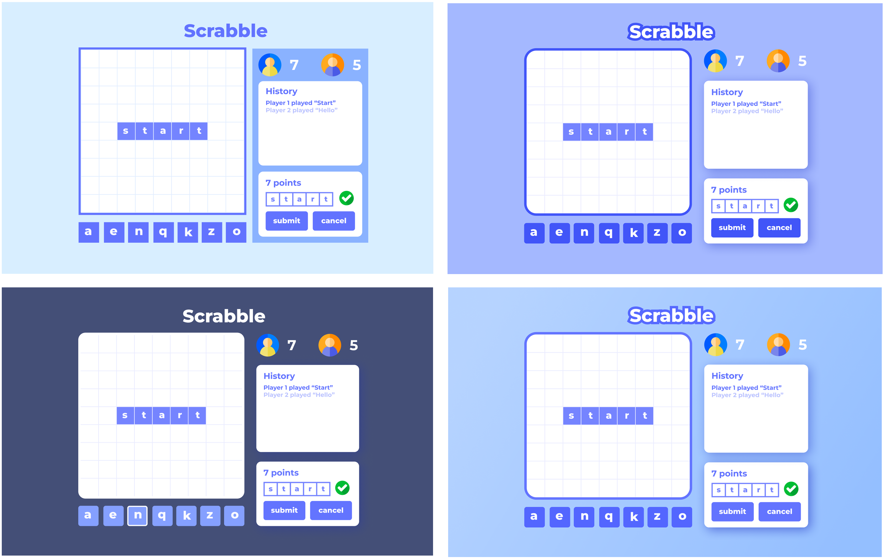
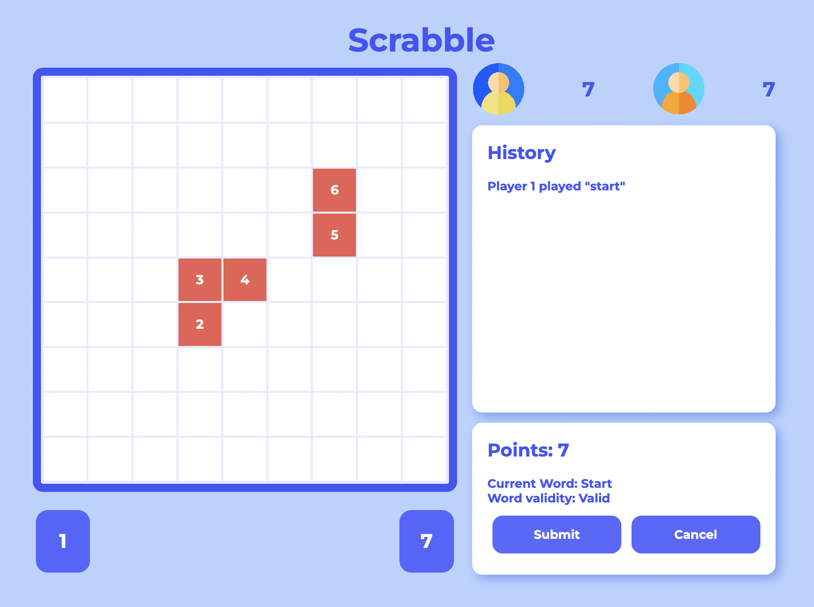

-
The aim of this project was to build a complete web application (in the form of the board game Scrabble),
including the UI/UX, front-end and game logic.
-
Initial Wireframe Sketches
-
Current online Scrabble web applications were researched for inspiration. Simple wireframe sketches were
created to plan
out the general layout. The aim was to create a simple user interface with only the required components.
-
UI Development
-
Several iterations for the user interface were developed using Figma. The main aims were to make the UI as
simple &
clear as possible by using strong shapes & high contrast.
- 
-
Game Logic
-
The game logic can be broken down into several core problems which are addressed below. Solving these
problems required defining
data structures to store the information about the game state and
designing algorithms to solve the set out problems.
-
The game logic can be broken down into several core problems which are addressed below. Solving these
problems
required defining
data structures to store the information about the game state and
designing algorithms to solve the set out problems.
-
Confirming connected tiles
-
Users are able to place tiles on any position on the board, however when they submit a move this must be
validated. For a valid Scrabble game state all of the tiles on a given board must be connected. Therefore an
algorithm is
required to accept a valid state or reject an invalid state like the one below:
- 
-
Several algorithms were researched to solve this problem. These could include structuring the information
into a graph and then performing a depth first search or breadth first search. Other methods could include
the use of pathfinding algorithms to identify routes through the tiles.
-
Sorting & Converting Connected Tiles into Words
-
If it is confirmed that all of the tiles on the board are connected then the tiles must be sorted and
organised into the proposed words to be processed.
-
Checking Word Validity
-
Once the tiles have been sorted and converted into words, these words must be cross-referenced with a
dictionary to ensure they are valid. After this has been fufilled the values associated with each tile
can be used to update player scores.